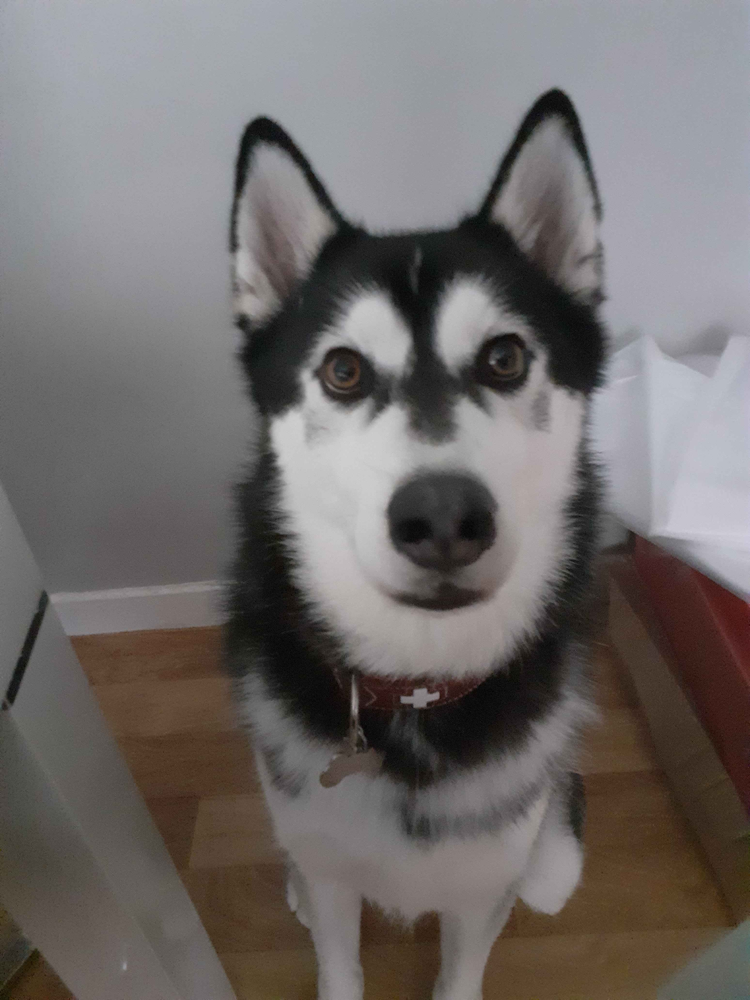
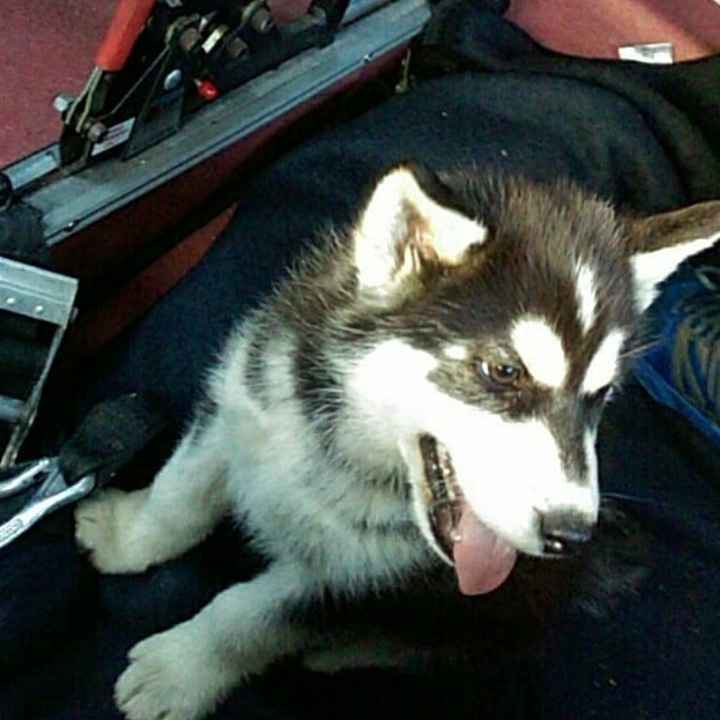
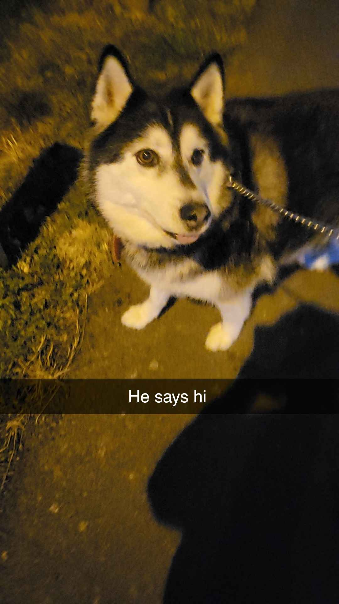

This is my dog, His name is Wolf
  
He is a Siberian Husky, Heres some fun facts about huskys
- They Were Used During World War II for Search and Rescue
- They Brought Lifesaving Serum to Fight an Epidemic in 1925
- They Were Developed as Working Sled Dogs Over Thousands of Years
- Some Believe Siberians Guard the Gates of Heaven
All of these fun husky facts come from
Husky Facts